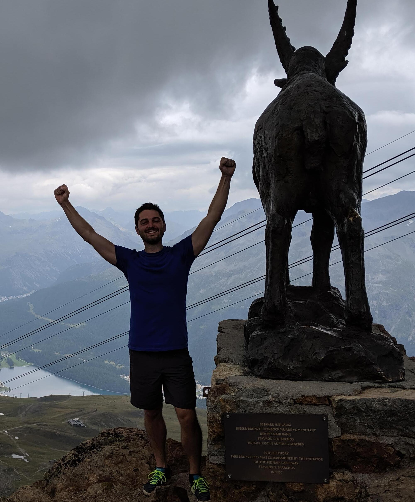

Tomas Geffner

(After an intense hike)
About
I am a research scientist at NVIDIA, working on generative modeling within the Fundamental Generative AI Research Group.
I obtained my PhD in Computer Science from UMass Amherst in 2023. During my PhD I am grateful to have interned at VantAI (New York, summer 2023) with Luca Naef and Michael Bronstein; DeepMind (London, summer 2022) with Andriy Mnih and George Papamakarios; MSR (Cambridge UK, summer 2021) with Cheng Zhang, Emre Kiciman and Miltos Allamanis; and Amazon AWS (New York, summer 2018) with Bing Xiang and Ramesh Nallapati.
I work on probabilistic Machine Learning, focusing on generative models and sampling methods. I am interested in fundamental methodological developments as well as applications in different scientific domains.
Before my PhD I also did some work on planning.
This is a link to my google scholar, and this is a link to my (somewhat unused) X/Twitter profile.
Publications (& Preprints)
- La-Proteina: Atomistic Protein Generation via Partially Latent Flow Matching.
By Tomas Geffner*, Kieran Didi*, Zhonglin Cao, Danny Reidenbach, Zuobai Zhang, Christian Dallago, Emine Kucukbenli, Karsten Kreis, Arash Vahdat.
Arxiv (2025).
- Learning Straight Flows by Learning Curved Interpolants.
By Shiv Shankar, Tomas Geffner.
Arxiv (2025).
- Efficient Molecular Conformer Generation with SO(3)-Averaged Flow Matching and Reflow.
By Zhonglin Cao, Mario Geiger, Allan Dos Santos Costa, Danny Reidenbach, Karsten Kreis, Tomas Geffner, Franco Pellegrini, Guoqing Zhou, Emine Kucukbenli.
ICML (2025).
- Adaptive Flow Matching for Resolving Small-Scale Physics.
By Stathi Fotiadis, Noah Brenowits, Tomas Geffner, Yair Cohen, Michael Protchard, Arash Vahdat, Morteza Mardani.
ICML (2025).
- Proteina: Scaling Flow-based Protein Structure Generative Models.
By Tomas Geffner*, Kieran Didi*, Zuobai Zhang*, Danny Reidenbach, Zhonglin Cao, Jason Yim, Mario Geiger, Christian Dallago, Emine Kucukbenli, Arash Vahdat, Karsten Kreis*.
ICLR 2025 (oral, top 1.8%).
- ProtComposer: Compositional Protein Structure Generation with 3D Ellipsoids.
By Hannes Stark*, Bowen Jing*, Tomas Geffner, Jason Yim, Tommi Jaakola, Arash Vahdat, Karsten Kreis.
ICLR 2025 (oral, top 1.8%).
- Energy-Based Diffusion Language Models for Text Generation.
By Minkai Xu, Tomas Geffner, Karsten Kreis, Weili Nie, Yilun Xu, Jure Leskovec, Stefano Ermon, Arash Vahdat.
ICLR 2025.
- Truncated Consistency Models.
By Sangyun Lee, Yilun Xu, Tomas Geffner, Giulia Fanti, Karsten Kreis, Arash Vahdat, Weili Nie.
ICLR 2025.
- PINDER: The protein interaction dataset and evaluation resource.
By Daniel Kovtun, Mehmet Akdel, Alexander Goncearenco, Guoqing Zhou, Graham Holt, David Baugher, Dejun Lin, Yusuf Adeshina, Thomas Castiglione, Xiaoyun Wang, Celine Marquet, Matt McPartlon, Tomas Geffner, Emanuele Rossi, Gabriele Corso, Hannes Stark, Zachary Carpenter, Emine Kucukbenli, Michael Bronstein, Luca Naef.
Biorxiv (2024).
- Aligning Target-Aware Molecule Diffusion Models with Exact Energy Optimization.
By Siyi Gu, Minkai Xu, Alexander Powers, Weili Nie, Tomas Geffner, Karsten Kreis, Jure Leskovec, Arash Vahdat, Stefano Ermon.
NeurIPS 2024.
- LatentDock: Protein-Protein Docking with Latent Diffusion.
By Matt McPartlon, Celine Marquet, Tomas Geffner, Daniel Kovtun, Alexander Goncearenco, Zachary Carpenter, Luca Naef, Michael Bronstein, Jinbo Xu.
Machine Learning for Structural Biology Workshop (NeurIPS 2023).
- Bending and Binding: Predicting Protein Flexibility upon Ligand Interaction using Diffusion Models.
By Xuejin Zhang, Tomas Geffner, Matt McPartlon, Mehmet Akdel, Dylan Abramson, Graham Holt, Alexander Goncearenco, Luca Naef, Michael Bronstein.
Generative AI and Biology Workshop (NeurIPS 2023).
- Compositional Score modeling for Simulation-based Inference.
By Tomas Geffner, George Papamakarios and Andriy Mnih.
ICML 2023.
- Langevin Diffusion Variational Inference.
By Tomas Geffner and Justin Domke.
AISTATS 2023.
- Variational Inference with Locally Enhanced Bounds for Hierarchical Models.
By Tomas Geffner and Justin Domke.
ICML 2022 (spotlight).
- Deep End-to-end Causal Inference.
By Tomas Geffner*, Javier Antoran*, Adam Foster*, Wenbo Gong, Chao Ma, Emre Kiciman, Amit Sharma, Angus Lamb, Martin Kukla, Nick Pawlowski, Miltadis Allamanis and Cheng Zhang.
TMLR.
- MCMC Variational Inference via Uncorrected Hamiltonian Annealing.
By Tomas Geffner and Justin Domke.
NeurIPS 2021.
- On the Difficulty of Unbiased Alpha Divergence Minimization.
By Tomas Geffner and Justin Domke.
ICML 2021.
- Empirical Evaluation of Biased Methods for Alpha Divergence Minimization.
By Tomas Geffner and Justin Domke.
AABI 2020 (contributed talk).
- Approximation Based Variance Reduction for Reparameterization Gradients.
By Tomas Geffner and Justin Domke.
NeurIPS 2020.
- A Rule for Gradient Estimator Selection, with an Application to Variational Inference.
By Tomas Geffner and Justin Domke.
AISTATS 2020.
- Using Large Ensembles of Control Variates for Variational Inference.
By Tomas Geffner and Justin Domke.
NeurIPS 2018.
- Compact Policies for Fully-Observable Non-Deterministic Planning as SAT.
By Tomas Geffner and Hector Geffner.
ICAPS 2018.
- Width-based Planning for General Video-Game Playing.
By Tomas Geffner and Hector Geffner.
AAIDE 2015.
Service
Organizing Committee:
- Publication chair (AISTATS 2023)
Conference reviewing:
- NeurIPS (2019, 2020, 2021, 2022, 2025)
- ICML (2020, 2025)
- ICLR (2021, 2022, 2025)
- AISTATS (2021)
Journal reviewing:
Teaching experience
I was a teaching assistant for several courses:
- Probabilistic graphical models.
- Machine learning.
- Introduction to data structures.
- Introduction to Natural language processing.
- Human Computer Interaction.
Other
I try to play tennis.
Contact
| Email: t[lastname]@nvidia.com |
| Email: [firstname][lastname]@gmail.com |
Disclaimer
The template for this website was obtained from here.